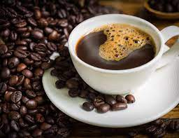
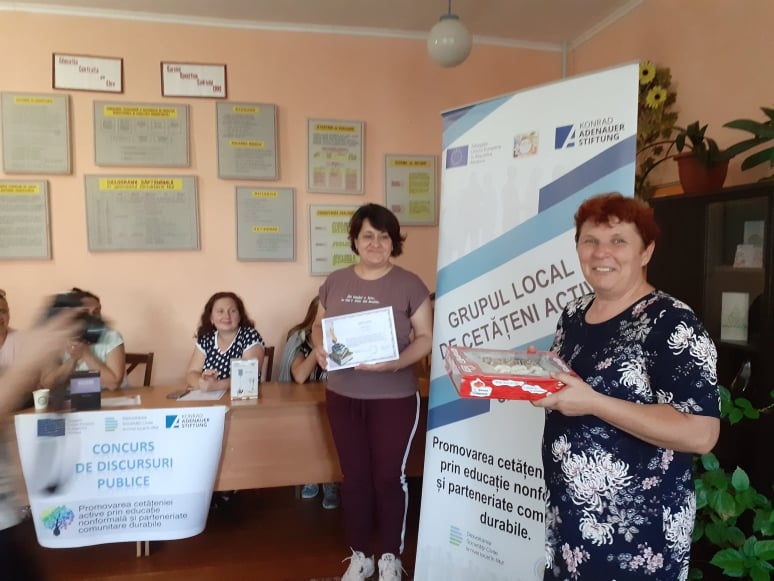
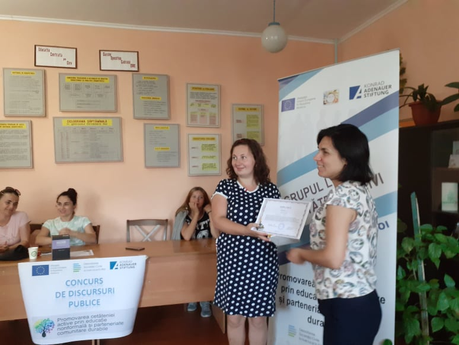
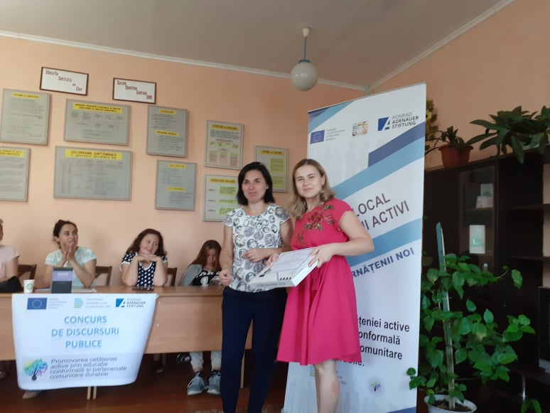
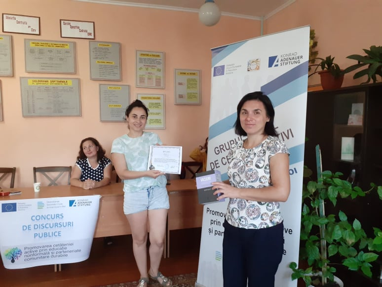
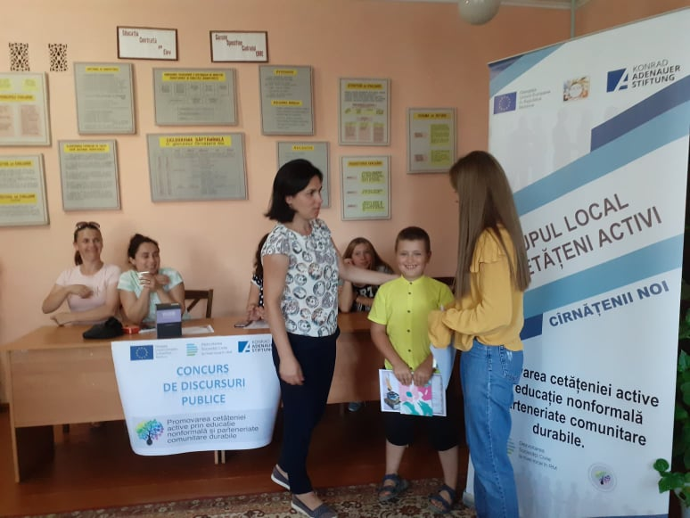
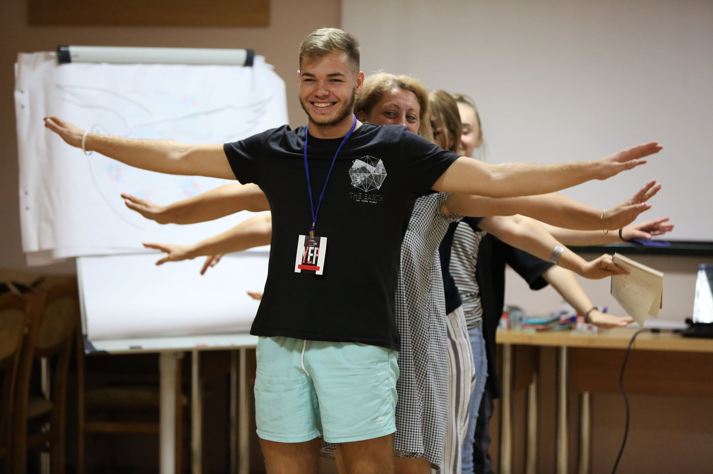

Evenimente
Sportul este sănătate

Dragi locuitori ai comunei Cîrnățenii Noi, vă așteptăm duminică, 29 august 2021, ora 16:00, pe stadionul din centrul satului pentru a ne avânta într-o competiție sportivă distractivă. Vom juca fotal, volei, tenis de masă, vom participa la starturi vesele și ne vom reîncărca de energie. Vă așteaptăm cu multă voie bună și premii.
Cafenea publică
Stimați membrii ai grupului și cetățeni activi din comuna Cîrnățenii Noi, vă așteptăm vineri, 20 august 2021, ora 12:00 în incinta gimnaziului din localitate pentru a valorifica trecutul și pentru a stabili o viziune de dezvoltare a satului nostru. Și desigur vom elabora un plan de activități dedicate frumoasei aniversare - 100 de ani ai satului natal. Voi veniți cu buna-dispoziție iar noi vă asigurăm cu o cafea gustoasă.
Instruire privind elaborarea unui dscurs

Sesiunile de instruire ”Cafenea publică - dialog activ și advocacy” s-au desfășurat în comuna Cîrnățenii Noi în perioada 28-30 mai 2021 și au reunit cetățenii activi, dornici să se implice în dezvoltarea locală și durabilă. Activitatea a derulat sub forma unei cafenele publice, spontan improvizate, ceea ce a facilitat procesul de învățare și participare. Din experiențele trăite, participanții au putut, foarte ușor, identifica care sunt punctele forte ale unui astfel de eveniment, dar și cât de importantă este atmosferă/ambianța unde are loc activitatea. Activitatea a fost realizată în cadrul proiectului ”Promovarea cetățeniei active prin educație nonformală și parteneriate comunitare durabile”, implementat de către AO ”VICON” în cadrul programului ”Dezvoltarea societății civile la nivel local în Republica Moldova”, implementat de către Fundația Konrad Adenauer în Republica Moldova, în parteneriat cu Centrul Analitic Independent ”Expert-Grup”, Asociația pentru Democrație Participativă ”ADEPT”, Asociația pentru Politică Externă și Asociația Obștească Centrul European Pro-Europa din Comrat.
Concurs de discursuri
Dragi Cetățeni Activi din Cîrnățenii Noi!
📣Concursul de discursuri publice, lansat în cadrul proiectului ”Promovarea cetățeniei
active prin educație nonformală și parteneriate comunitare durabile”, s-a desfășurat în
două etape:
👉până la 10 august 2021: recepționarea filmulețelor video cu discursul înregistrat la
adresa electronică ong.vicon@gmail.com.
👉10-15 august 2021: organizarea evenimentului public în cadrul căruia vom aprecia
participanții și premia câștigătorii concursului.
Echipa de implementare a fost mereu în preajmă pentru suport!
Participanții la concurs au vorbit pe diverse teme:
Viorica Railean
 Avem o țară democratică și de noi depinde cum vom trăi în ea.Olga Serjant
 Citește, citește, citește! Îți va prinde bine în viață.Cristina Savca
 Avem o localitate frumoasă, șie ea este unică. Satul nostru are nevoie de ideile noastre.Olesea Iordan
 Să avem grijă de casa noastră comună - PLANETA. Iar reciclarea este una din soluții.Snejana Morari
 Toate maladiile se pot preveni respectând măsurile de igienă și optând pentru un mod de viață sănătos.Academia pentru Liderism Comunitar
💥Am finalizat Academia pentru Liderism Comunitar care a avut loc la Chișinău între 11-13 august ⛳🇲🇩 Ce emoții, ce tineri minunați! 💖😊🎨 💥La activitate au participat 56 tineri din 30 comunități rurale din 12 raioane ale RM. Tinerii au fost împărțiți pe 3 grupe mai mici. 💥Alături de tineri au participat și 12 reprezentanți ONG - partenerii locali ai iRi care acordă suport continuu celor 30 grupuri de inițiativă. 💥În cadrul Academiei, participanții au învățat despre cum să fii un inițiator și accelerator al schimbării la nivel local. Pe lângă jocurile interactive în care toți participanții s-au implicat cu zâmbete, tinerii au învățat despre calitățile unui lider, spiritul de echipă, comunicarea eficientă în cadrul echipei, dar și cum se iau decizii în grup 📚🗣💫 💥Mulțumim trainerilor, Radion Velcev, Mariana Meg Turcan & Vitalie Cîrhana precum și colegilor de la Institute for Rural Initiatives / Institutul pentru Inițiative Rurale pentru ghidare și facilitare. 💥Revenind în comunitățile lor, plini de idei și inspirație, tinerii, împreună cu ceilalți membri ai grupului de inițiativă și reprezentanți APL vor continua să facă lucruri minunate. Noi îi vom ajuta cu drag 🧩📢🛠 ℹProiectul este implementat de către Institutul pentru Inițiative Rurale în Moldova (iRi) și partenerii locali în parteneriat cu Great Lakes Community Action Partnership (GLCAP), Ohio, USA cu suportul financiar acordat de Departamentul de Stat al Statelor Unite ale Americii.
Parteneriate durabile

Cetățenii activi din r. Căușeni creează Grupuri Locale! Asociația Obștească „VICON” a demarat, în perioada 21-23 ianuarie 2021, implementarea proiectului „Promovarea cetățeniei active prin educație nonformală și parteneriate comunitare durabile” cu activitatea de creare a Grupurilor Locale ale Cetățenilor Activi în satele Taraclia, Cîrnățenii Noi și Sălcuța din raionul Căușeni. Proiectul își propune să contribuie la sporirea angajamentului civic și a nivelului de implicare a cetățenilor la dezvoltarea comunității, prin programe de educație nonformală și activități de promovare a principiilor unei guvernări locale democratice și transparente. La ședințele de constituire a grupului au participat reprezentanți ai Administrației Publice Locale, cadre didactice și manageriale, elevi și tineri activi, agenți economici și alte persoane interesate, care au apreciat faptul că implicarea civică a populației este definitorie pentru dezvoltarea durabilă a comunității. În comuna Cîrnățenii Noi, Grupul de Cetățeni Activi este susținut de directoarea Gimnaziului Cîrnățenii Noi, Elena Savca, care a subliniat că realizarea proiectelor comunitare, în vederea consolidării coeziunii sociale și dezvoltării parteneriatelor comunitare, reprezintă unul din domeniile de competență profesională ale cadrelor didactice. Profesorii, în colaborare cu elevii și părinții, trebuie să devină promotorii dezvoltării locale durabile. După ce au discutat și aprobat Regulamentul de activitate și principiile de organizare, membrii grupurilor au ales câte un lider și un secretar care vor dirija activitatea grupului, stabilind parteneriate și direcții strategice de dezvoltare și organizând evidența și monitorizarea activităților. În perioada următoare, liderii grupurilor vor avea întâlniri oficiale cu primarii localităților pentru a depune nota informativă de constituire a grupului, în vederea solicității unui act de confirmare din partea APL: Activitatea face parte din proiectul „Promovarea cetățeniei active prin educație nonformală și parteneriate comunitare durabile” finanțat de Uniunea Europeană și Fundația Konrad Adenauer prin intermediul Programului de granturi „Dezvoltarea societății civile la nivel local în Republica Moldova”. Proiectul este finanțat de Uniunea Europeană și Fundația Konrad Adenauer, în cadrul programului de granturi „Dezvoltarea societății civile la nivel local în Republica Moldova”. În perioada anilor 2019-2021, prin intermediul acestui program, vor fi oferite granturi în valoare de circa 3 milioane de euro Organizațiilor Societății Civile, care își desfășoară activitatea în afara orașului Chișinău. #dezvoltmd #EuropeanUnion #CivilSociety